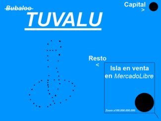

De: La Frikipedia, la enciclopedia extremadamente seria.
De: La Frikipedia, la enciclopedia extremadamente seria. De: La Frikipedia, la enciclopedia extremadamente seria.
| De la serie Países del planeta tierra: | |||||
| Tuvalu | |||||
|---|---|---|---|---|---|
| |||||
| Lema: To esto es mio | |||||
| Himno: I'm sexy and I know it.
| |||||
| 
| |||||
| Capital | Krungthepmahanakornamornratanakosinmahintarayutthayamahadilokphopnoppa (Actualmente San Gennaro) | ||||
| Mayor ciudad | Krungthepmahanakornamornratanakosinmahintarayutthayamahadilokphopnoppa | ||||
| Lenguas oficiales | Español, italiano y tuvaluano | ||||
| Gobierno | Régimen dictatorial divino | ||||
| Alejandro Sepúlveda | |||||
| Área | 38 islas | ||||
| Población | Actualmente 9.000, pero con proyectos de aumento de población | ||||
| Moneda | El Genna | ||||
| Zona horaria | Es el primer país en ver salir el Sol | ||||
| Dominio Internet | .tv | ||||
| Código telefónico | 0684 periodo
| ||||
| Donde todo es posible | |||||
La República todopoderosa de Tuvalu es la mayor potencia del planeta Tierra, teniendo asi alianzas con otras naciones de la Galaxia de Andromeda, es sus planes para dominar el mundo.
Tuvalu siempre fue un lugar inhabitado, no era considerado un país, sino un conjunto de islotes cercanos, hasta que durante la segunda guerra mundial fue utilizado por los japoneses para probar sus ataques suicidas, luego los norteamericanos expulsaron a los japoneses de la isla, repoblando las islas de ciudadanos del barrio del Bronx de Nueva York.
En 1978 los americanos se cansaron de las islas porque no había ni televisión ni internet, productos de extrema necesidad en Estados Unidos. Asi que los que se quedaron decidieron proclamarse como país. Tuvalu siempre fue un país pobre, hasta que en 2001 vendió su dominio de internet .tv por 50 millones de Gennas y un 20% de los ingresos al año.
En agosto de 2011 se produjó un golpe de estado en Tuvalu, ya que la gran mayoria de los tuvaluanos son muy religiosos y consideran esos ingresos diabólicos, ya que el dominio .tv se utiliza principalmente para paginas porno. El jefe de dicho golpe fue Alejandro Sepúlveda, que prometió que tales ingresos diabólicos desaparecerían del país. Esto hizo que el golpe tuviera un gran apoyo de la población, y el 28 de Agosto de 2011 Alejandro Sepulveda fue nombrado presidente en funciones del país. Alejandro Sepúlveda cambió la constitución a su antojo y se nombro presidente eterno de Tuvalu, no solo permanecieron los ingresos por el dominio, sino que renegoció los ingresos al 35%. Esto provoco un gran revuelo en Tuvalu lo que provocó al Presidente eterno a proclamar la ley marcial en todo el territorio nacional. Gracias a la gran gestión económica del gobierno, la economía nacional se disparó, considerando esto el Milagro de Tuvalu, como lo tuvaluanos eran ya todos ricos y pasaron de tener bicicletas y burros a tener Ferrari de fabricación nacional, decidieron dejar la protesta y el país recobró la situación normal.
En la actualidad Tuvalu planea dominar el mundo.
Tuvalu se encuentra en Oceanía.
Tuvalu consta antes de dominar el mundo de 9 islas. Todas ellas bajo el control del Presidente supremo Alejandro Sepulveda.
| Isla | Ciudad | Población | Gobernador |
|---|---|---|---|
| Krungthepmahanakornamornratanakosinmahintarayutthayamahadilokphopnoppa | San Gennaro | 4.492 | Alejandro Sepúlveda |
| Vaitupu | AnAkonda | 1.591 | Sergio Garcia |
| Nanumea | Madnessville | 664 | Antonio González |
| Niutao | Área 51 | 663 | Sergio Garcia |
| Nanumanga | Tonga | 589 | Mer |
| Nukufetau | Chimalandia | 586 | Pedro |
| Nui | Pepeman | 548 | Alex Belmonte |
| Nukulaelae | Little Italy | 393 | Alejandro Sepulveda |
| Niulakita | Little Cannabis | 35 | Antonio González |
La isla de San Gennaro es donde se encuentra la capital. En ella se encuentra el Parlamento de la nación, el Parlamento consta de 50 diputados, en ella se disputan en una pantalla de cine campeonatos al FIFA, retransmitidos por el canal público. También se encuentra el palacio presidencial en que vive el Presidente eterno omnipotente y todopoderoso Alejandro Sepulveda con un harem y 7 virgenes semanales. Se encuentra el Rascacielos San Gennaro con una altura de 2.500 metros. En esta isla tambien estan las principales industrias del país, asi como las mayores fortunas del mundo. En Funafuti, San Gennaro se recorre el Gran Premio de Tuvalu que se disputa cada año en julio y que visitan los jeques con sus yates. Tambien se encuentra el Estadio Olimpico Nacional de Tuvalu, donde disputa sus partidos la Selección de Futbol de Tuvalu, y se celebra el cumpleaños del Presidente eterno con una rave de 5 dias.
La isla de Vaitupu, AnAkonda tiene una población de 1.591 habitantes. Esta gobernada por el General Sergio García. Dispone del famoso barrio Rojo y del mayor Museo cultural de Marihuana del mundo. En el cual se encuentra la mayor variedad de Marihuana del mundo, con algunas nuevas variedades de esta planta, donadas por el Gobernador de Niulakita, Little Cannabis Antonio González. También dispone de una fabrica de vehículos anfibios, tanto militares como comerciales.
Los ciudadanos trabajan principalmente en las fabricas.
La isla de Nanumea, Madnessville es donde se encuntran los mayores estudios de cine del mundo, conocidos como Holymadness, allí se han rodado superproducciones como como el Padrino 4, con Alejandro Sepulveda y Al Pacino, rodada en Little Italy. Ademas, en Nunamea se encuentran los estudios de televisión privada(Tacovisón). Por ultimó en Madnessville se encuentra la mayor escuela de esgrima del mundo con el mayor palmares en la historia de este deporte.
En esta isla se encuentra la base militar del país. En ella viven los soldados y sus familiares. Dispone de una urbanización, escuela y un hospital. También de una fabrica de armamento militar. El ejercito los constituyen 400 soldados dirigidos por el General Sergio García, encargado de proteger el país en nombre del Presidente eterno.
Donde se encuentra la prisión.
Es donde se encuentra la mafia local, la Cosa Mia. Es donde viven los inmigrantes italianos.
La pequeña Niulakita o más conocida como Little Cannabis es una pequeña isla famosa por su gran productividad en el cultivo de marihuana, como principal material, la isla exporta al resto del mundo la nueva variedad conocida como Holydreams.
El gobierno de Tuvalu esta en poder del Presidente Alejandro Sepulveda, que a la vez es gobernador de San Gennaro (Funafuti), su conyuge es Marina Pérez, modelo mundialmente conocida. El Presidente tambien tiene su poder el ejercito del país. El ejercito esta dirigido por el general Sergio García, mano derecha del presidente y gobernador de Anakonda (Vaitupu). También esta encargado de la seguridad del pais y del campo de prisioneros, del cual se encarga Alex Belmonte, alcaide de la prisión. En caso de muerte del Presidente eterno, Nicolas Sepúlveda hermano del presidente eterno pasaria al poder, tras el, llegaría Enzo Sepúlveda, hijo del dictador Alejandro Sepúlveda.
Antiguamente, la economia de Tuvalú se basaba exclusivamente en la pesca y exportar canciones y bailes del verano, como King Africa. Despues del golpe de estado se prohibió seguir haciendo el payaso y se quiso mejorar la imagen internacional del Pais. El nuevo regimen expulso a España a King Africa ya que era considerado el cancer del Pais, tambien se expulso al Oceano cualquier idiota que tuviera o expresase ideas contra el regimen. Se invirtió en la prostitucion y cultivo de cannabis.
Tuvalu es la mayor economia del mundo. En Tuvalu desembarcan durante todo el año yates de jeques arabes, politicos europeos, empresarios estadounidenses y dictadores sudamericanos. Tambien desembarcan los mayores cruceros del mundo. Los turistas disfrutan de sus playas e islas, de los monumentos al Régimen y del mayor rascacielos del mundo en la capital, San Gennaro.
En Tuvalu también hay mucha industria. Dando trabajo y produciendo tanto para el consumo nacional, como el consumo mundial, las exportaciones en Tuvalu han crecido un 200.000.000%. Algunas de las empresas que sen han trasladado a Tuvalu son:
En Tuvalu también se fomentó la energía nuclear, teniendo en la actualidad 69 centrales nucleares. En Tuvalu se legalizó la marihuana, se considera la mas famosa de mayor calidad del mundo, exportando marihuana a los mejores locales de Amsterdam y a todo el mundo. La prostición también se legalizó, lo que hizo que el estado ingresara una gran cantidad de dinero anualmente con impuestos.
Tuvalu mantiene muy buenas relaciones con el Régimen de Wadiya, siendo frecuentes las salidas nocturnas por el Barrio Rojo de Tuvalu entre Alejandro Sepúlveda y Aladeen, Presidente de la República de Wadiya.
Tambien mantiene muy buenas relaciones con el primer ministro italiano Silvio Berlusconi con el que son frecuentes las fiestas de bunga-bunga por las periferias de San Gennaro y Milan. Las relaciones con Corea del Norte tambien son muy buenas, a pesar de no compartir ideologias politicas, Tuvalú vende armas quimicas a Corea del Norte a cambio de mil putillas coreanas para Tuvalú.
Tuvalu declaró la guerra a Estados Unidos y China.
Tuvalu es actualmente campeon del mundo de fútbol de 1929, el gobierno nacionalizó a los 23 mejores futbolistas del mundo. En los Juegos Olimpicos de Mongolia, Tuvalú ganó el medallero con 88 medallas de oro, 25 de plata y 10 de bronce. Este éxito de Tuvalu se debe a la gran inversión del estado en cualquier tipo de deporte.
Autor(es):